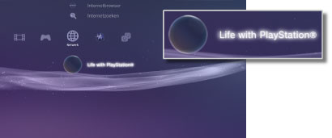

Netwerk > Life with PlayStation®
Life with PlayStation®
Life with PlayStation® levert dynamische webinhoud die in unieke kanalen is ingedeeld en volgens tijdstip en plaats kan bekeken worden. Als u een kanaal selecteert, krijgt u verschillende soorten inhoud voorgeschoteld.
Als u Life with PlayStation® gebruikt, neemt u automatisch deel aan het Folding@home™-project. Dat is een verspreid computerproject onder toezicht van Stanford University.
Life with PlayStation® starten
Om Life with PlayStation® te gebruiken, moet u eerst de toepassing Life with PlayStation® downloaden en installeren. Selecteer  (Life with PlayStation®) onder
(Life with PlayStation®) onder  (Netwerk) om de toepassing te downloaden. Volg de instructies op het scherm om de installatie af te ronden.
(Netwerk) om de toepassing te downloaden. Volg de instructies op het scherm om de installatie af te ronden.

Opmerkingen
- Om Life with PlayStation® te installeren, is minstens 500 MB vrije ruimte nodig op de vaste schijf van het PS3™-systeem.
- Als het pictogram
 (Folding@home™) wordt weergegeven, moet u eerst de toepassing Folding@home™ bijwerken en updaten naar Life with PlayStation®. Selecteer (Folding@home™) onder (Netwerk) en volg de instructies op het scherm om de toepassing Folding@home™ bij te werken. Selecteer dan opnieuw (Folding@home™) onder (Netwerk) en volg de instructies op het scherm om te updaten naar Life with PlayStation®.
(Folding@home™) wordt weergegeven, moet u eerst de toepassing Folding@home™ bijwerken en updaten naar Life with PlayStation®. Selecteer (Folding@home™) onder (Netwerk) en volg de instructies op het scherm om de toepassing Folding@home™ bij te werken. Selecteer dan opnieuw (Folding@home™) onder (Netwerk) en volg de instructies op het scherm om te updaten naar Life with PlayStation®.
Life with PlayStation® afsluiten
Om Life with PlayStation® te beëindigen, drukt u op de PS-toets op de draadloze controller en vervolgens selecteert u  (Beëindigen) onder (Netwerk).
(Beëindigen) onder (Netwerk).
Auto-start instellen
Life with PlayStation® wordt automatisch gestart als het PS3™-systeem gedurende een bepaalde tijd niet wordt gebruikt. Selecteer (Life with PlayStation®) onder (Netwerk), druk op de  -toets en selecteer vervolgens [Auto-Start] in het optiesmenu.
-toets en selecteer vervolgens [Auto-Start] in het optiesmenu.
| Uit | Stel deze optie in om Life with PlayStation® niet automatisch te starten. |
|---|---|
| Na 10 minuten | Life with PlayStation® starten na 10 minuten. |
| Na 20 minuten | Life with PlayStation® starten na 20 minuten. |
| Na 30 minuten | Life with PlayStation® starten na 30 minuten. |
Opmerking
[Auto-Start] is uitgeschakeld wanneer het PS3™-systeem is verbonden met het internet.
Life with PlayStation® verwijderen
Het programma Life with PlayStation® kan worden verwijderd van de vaste schijf. Selecteer (Life with PlayStation®) onder (Netwerk), druk op de -toets en selecteer vervolgens [Verwijderen] in het optiesmenu.
Opmerking
Zelfs als het programma wordt verwijderd, wordt het pictogram (Life with PlayStation®) niet verwijderd uit het XMB™-menu.
Als u het pictogram selecteert, wordt het programma Life with PlayStation® opnieuw gedownload.